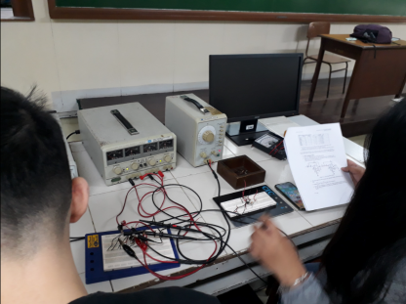
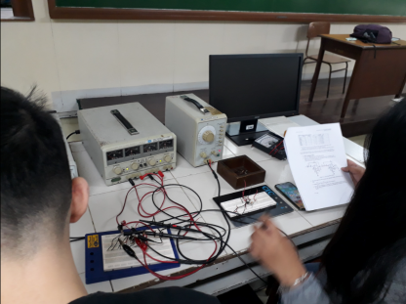
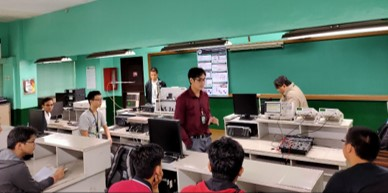

Laboratory and Facilities
Electrical Machine Laboratory


Room: M402A
Equipment: Electromechanical training systems, Motors, Generators, Transformers, Wattmers, Tachometers
Electrical Circuits Laboratory

Room: M402B, M402C
Equipment: Electric Circuits training systems, Power Supplies, Multimeters, Wattmeters, Resistors, Capacitors, Inductors
Analog and Digital Electronics Laboratories
 

Room: V303A, V303B
Equipment: Analog Oscilloscopes, Multimeters, Logic Probes, Curve Tracers, Signal Generators, Power Supplies, Logic Trainers, PLC Trainers, Transformers
Hardware and Software Laboratories

Room: V311, V312
Equipment: Desktop Computers, Oscilloscopes, Power Supplies, Multimeters, Curve Tracers, Transformers, Modems, Routers
Interfacing Laboratory and Networking Laboratory
The laboratory is equipped with desktop computers and networking equipment needed to experiment and learn the principles of computer architecture, interfacing and networking.Room: V401
Equipment: Desktop Computers, Interface Boards, Development Boards, Modems, Routers, Oscilloscopes, Power Supplies
Hardware and Software Laboratories

The laboratories consist of advanced training systems to learn the principles of different communications systems
such as analog communications and digital communications. They are also equipped with desktop computers installed
with Matlab application software.Room: V402, V404
Equipment: Analog/Digital Communications training systems, Antenna training systems, Microwave training systems, Telephone Line simulators, Desktop Computers, Digital Oscilloscopes, Spectrum Analyzers, Amplifiers, Sound Level Meters, Matlab software
Research Laboratories
Digital Signal Processing Laboratory (DSP)
Head: Prof. Dr. Edwin SybingcoSignal processing is a subfield of electrical engineering that focuses on the acquisition, modeling, transformation, and interpretation of information. Research topics include but are not limited to image processing, graph signal processing, computer/machine vision, machine learning, network data analysis, distributed signal processing, image and video coding, biomedical signal processing, remote sensing, radar signal processing, sonar signal processing, and industrial applications
Robotics and Industrial Automation Laboratory (RIAL)
Head: Prof. Dr. Argel BandalaThe Robotic and Industrial Automation Laboratory aims to apply dynamic systems theory to the design and construction of intelligent systems and machines targeting real world applications. Managing kinetic energy is the key foundation of the designs of the robots which enables them to perform tasks which leads to the success of the mission or goals
Wireless Communications Engineering Laboratory (WCEL)
Head: Dr. Gerald AradaAdvanced Information Systems Laboratory (AISL)
Head: Prof. Dr. Reggie GustiloMicroelectronics Laboratory (MICRO)
Head: Dr. Roderick YapThis laboratory focuses on research related to Full Custom Integrated Circuit design using CMOS library for analog and/or digital applications. It also focuses on hardware modeling and FPGA Library Based designs on various digital systems.